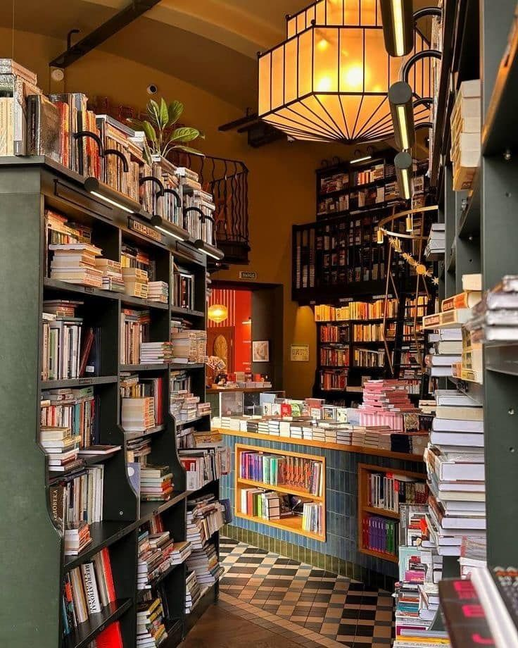

Добро пожаловать в "Переплёт"
Мы - уютный книжный магазин, в котором пахнет свежесваренным кофе и новыми книгами. Здесь вы найдёте как современные бестселлеры, так и классику, проверенную временем.
Особое место в нашей коллекции занимают книги Сергея Лукьяненко, Жана-Кристофа Гранже, Франка Тилье, Эриха Марии Ремарка и Григория Остера. Загляните в каталог, чтобы выбрать свою следующую книгу.

Что вас ждёт в "Переплёте"?
- Тщательно отобранная коллекция книг
- Уютный зал для чтения с кофе
- Еженедельные встречи книжного клуба
- Помощь в подборе книги для любого настроения
"Книги - это корабли мысли, странствующие по волнам времени." -